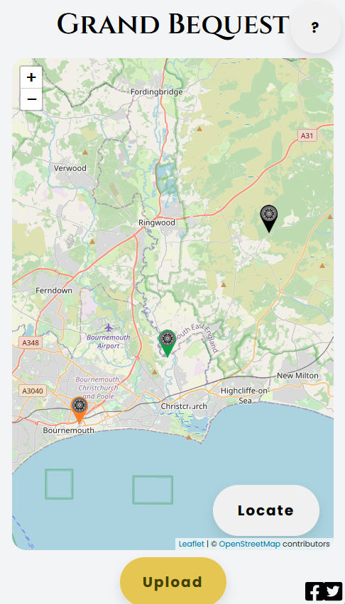
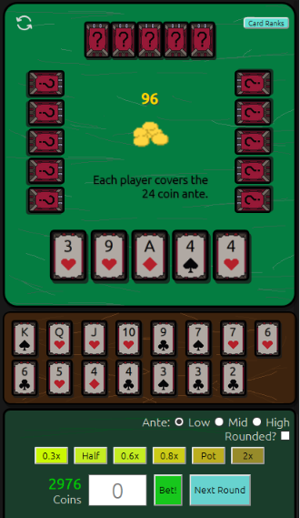
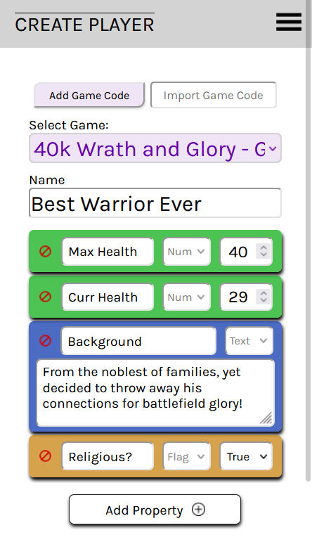
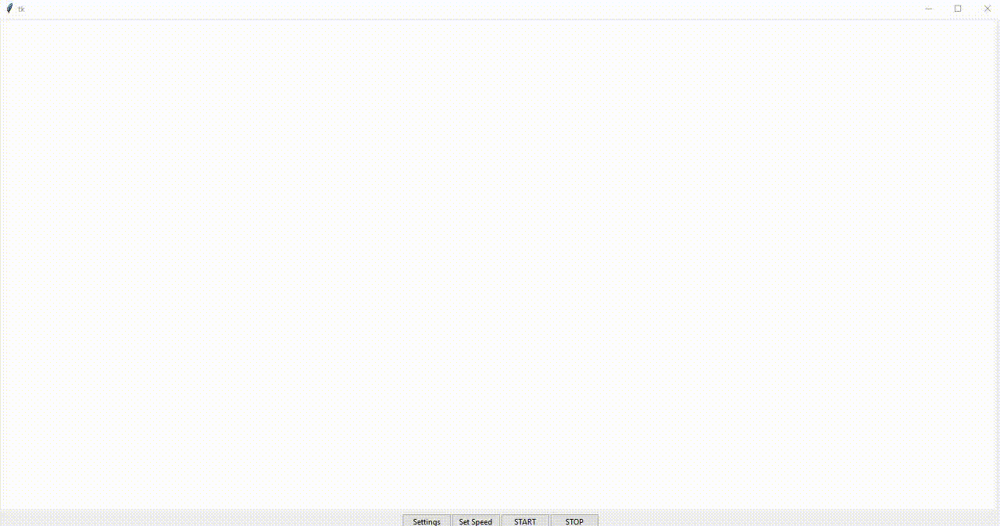
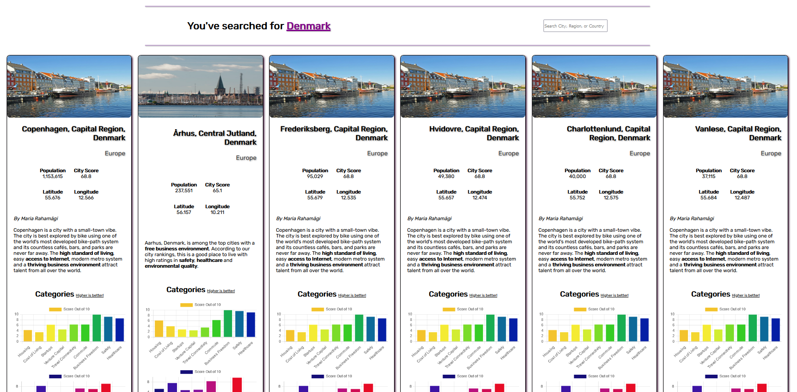
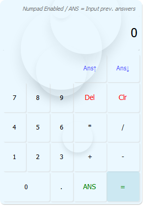
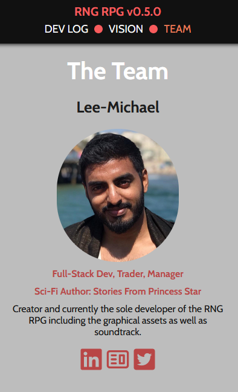
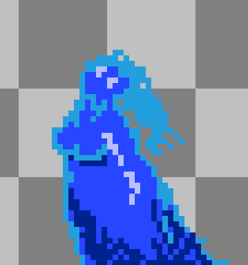
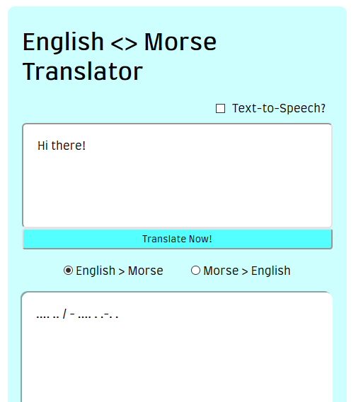
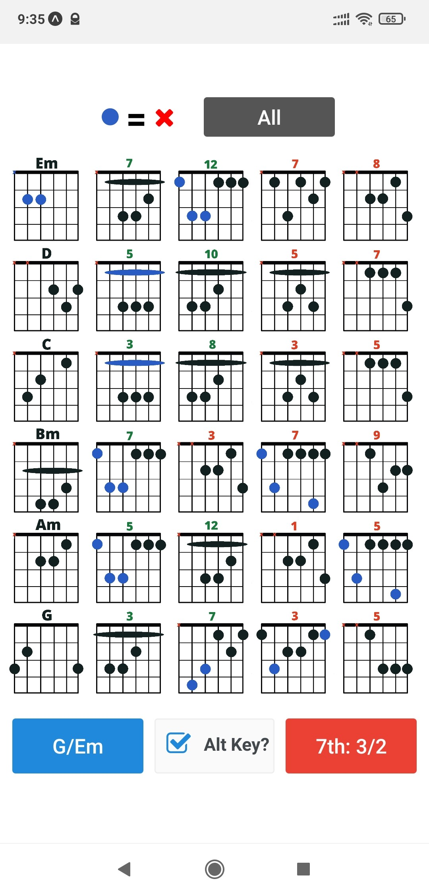

-

Grand Bequest App
Agile/Scrum in 1-week sprints - A web-app for the company Grand
Bequest - users can live-capture/upload images of an abandoned
building from a phone/computer and add geolocation pins to an
interactive Leaflet map with extra information - the data is sent
to a Firebase DB and the image is uploaded to the storage and
linked to the DB entry. The company reviews the information and
partners with architects/residential developers to create
solutions for these abandoned buildings.
My role was full-stack, but I primarily developed all of the core
back-end functionality. Built using React JS, Firebase, Leaflet,
and Figma.
-

Logic Poker
Logic poker is a type of speed poker with an emphasis on bet
sizing. Check out the github repo for an explanation on bet sizing
and more about the project.
Features: Jest w/ Babel unit testing, logic for win and draw
outcomes, QoL buttons and efficient UXUI, change settings.
-

AGAS Full-Stack App
Any Game Any Score (AGAS) is a full-stack web app which uses JAVA
Spring Boot with a H2 JPA MySQL DB for the back-end and React for
the front-end. It also uses the SPA PKCE Flow for OAuth2 via Okta,
which passes credentials from the front-end to the back-end.
SECURITY Information is secure three-fold, firstly users
must login through Okta authentication, secondly all of the
back-end endpoints require a legitimate auth header to access
them, thirdly the front-end URLs are secured via SecureRoute (only
logged in users can view their information).
-

Rimi's Eyetrack
A simple but effective Python-built tkinter app for training
reactions with customisable grid size, target colour, and
background colour. Utilises numpy to create an invisible grid and
exported with cx_Freeze.
For more features check out the github readme!
-

Atlas Info
Search and display key aggregated information about 100s of
cities/regions! Easily check an area's safety, quality of life,
education, healthcare statistics, alongside a brief bit of
information to describe the area and population.
Retrieves city/region information from the Teleport API and
renders them using React, chart.js, and routing. Responsive for
desktop, tablet, and mobile.
-

Web Calculator
A custom-built calculator without using the eval() function.
Utilises end-to-end testing with Cypress and features a dynamic
bubble background.
Scroll through the previous answers to input them into the current
calculation! Modular in function and design with grid-area, and
ready to be expanded into a full scientific calculator.
-

RPG Dev Log
A development log for my RPG (see next slide) made with React so
that people may tune in and follow the active updates! You can
also view information regarding the current team and other
interesting tidbits.
The main view for the Dev Log is in a blog format, check the
link to
view all of the game's updates and find out its current state! Or
view the
repo to
see the React JS code.
-

Python RPG + Machine Learning
An in-depth RNG-based RPG with millions of weapon, armour, and
creature combinations - all of which are easily generated on the
fly. The working combat system is complex, featuring; randomly
generated magic, a multitude of status effects, buffs/debuffs,
effects over time, and more. All of the above is in the game using
1000s of lines of code and also works! Developed using GitLab and
its ticket board in my free time. 2D pixel art and the music will
also be developed by myself. Next stages include porting the code
to the GODOT game engine.
Various NN ML projects including Regression, Classification, KNN,
SVC, PCA, clustering, and other various tools within supervised
and unsupervised learning.
-

Morse Translator
Via TDD unit testing, the Morse Code Translator was created!
Features: TDD unit testing with Jest and Babel, English to Morse,
and Morse to English, Text to Speech.
-

Chordy Guitar
An Android, iOS, and web app made in React Native with Expo - free
with ads and Paid versions exist.
Easily view chord variations for a guitar key, see the 7th chords
simultaneously, or view the entire chord list! Required Python for
handling file management.